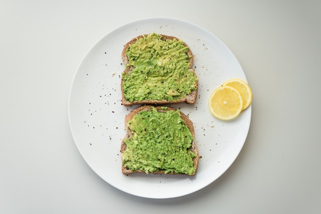

Avocado Toast

Description
Avocado toast: creamy avocado spread on toasted bread,
seasoned with salt, lemon juice, and red pepper flakes.
Customize with toppings like tomatoes, feta cheese, or
poached eggs. Quick, delicious, and perfect for any time
of day.
Ingredients
- Avocado
- 2 bread slices
- egg
- lemon
- optional: salt
- optional: pepper
Steps
-
Start by toasting a slice of bread until it reaches your
desired level of crispiness.
- Cut a ripe avocado in half lengthwise and remove the pit. Scoop the avocado flesh into a bowl.
- Crack an egg into a small bowl or directly into the pan.
- Mash the avocado with a fork until it reaches a smooth and creamy consistency.
- Season the mashed avocado with a pinch of salt, a squeeze of fresh lemon or lime juice, and a sprinkle of red pepper flakes for some added flavor and heat. You can also add a dash of black pepper or any other desired seasonings.
- Once the avocado mixture is well-seasoned, spread it generously onto the toasted bread.
- To enhance the flavor and texture, you can add additional toppings of your choice. Some suggestions include sliced tomatoes, crumbled feta cheese, sliced cucumbers, microgreens, or a drizzle of balsamic glaze.
- Serve your delicious Avocado Toast immediately and enjoy!